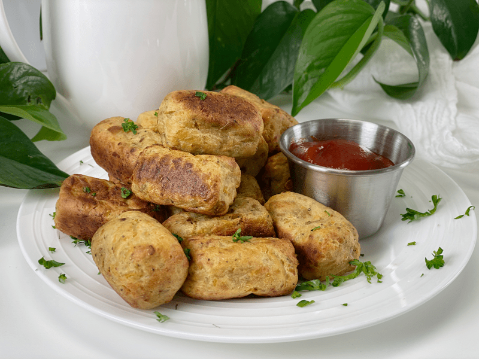
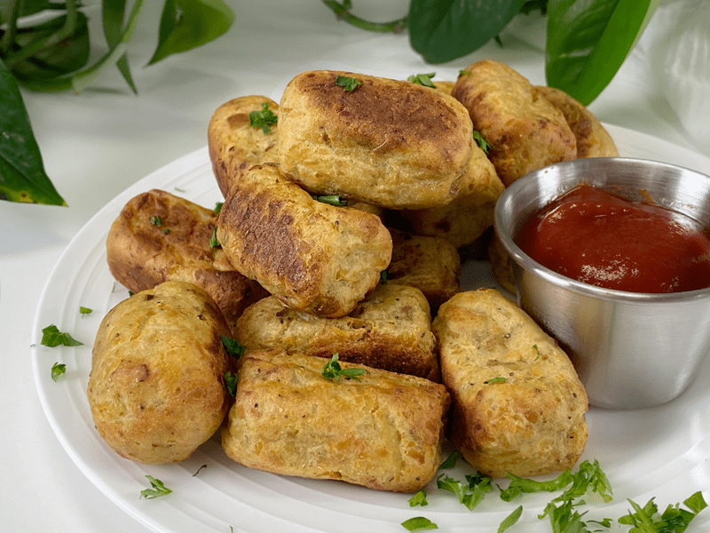
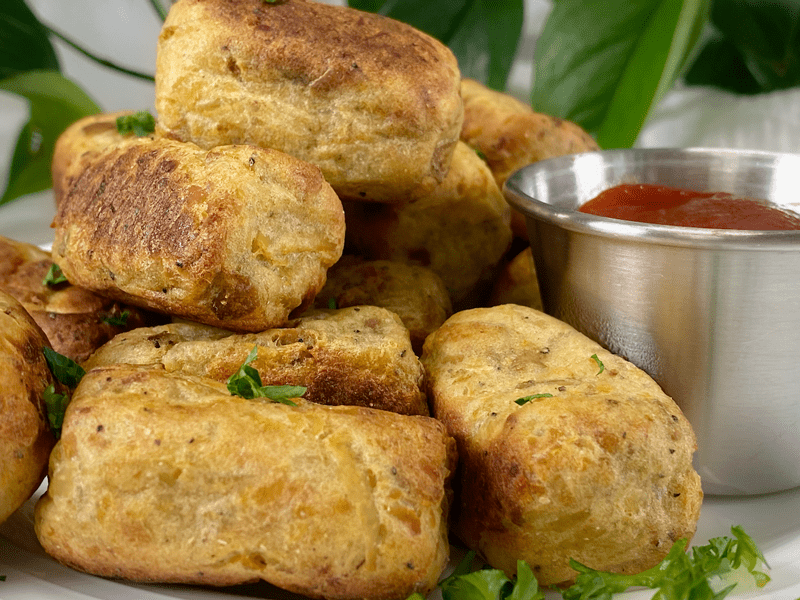

Mashed Potato Tater Tots | Cooked | Oil-Free
Tater tots have morphed into a cultural phenomenon over the years. Every year, an estimated 3.5 billion tater tots are eaten by Americans. Well, today we are going to join the statistics by making 18 of them (pulls out my tot log). Of course, I might shoot out subliminal messages that cause you to double or triple the recipe—just saying. If you do, then we know for sure that I have culinary superpowers (keep me posted in the comments section). Apparently, I woke up feeling a little silly this morning…that, or I am still experiencing that lingering high from the eye-rolling-pleasure-groaning delight of having tots last night for dinner.

I’m not going to pretend that these taste exactly like store-bought tater tots. Most tots are described as “crunchy, crispy, and with a tasty golden edge and soft potato center.” Well, mine weren’t crunchy-crispy, but they had a nice firm exterior and a soft center that surely didn’t disappoint. Especially after learning that the ones I grew up eating were made with potatoes, vegetable oil (sunflower, cottonseed, soybean and/or canola), salt, yellow corn flour, dextrose, disodium dihydrogen pyrophosphate, dehydrated onion, sodium sulfate, natural flavoring…hmmm. I’m going to stick to my homemade-healthified version.
Tater Tot Tips
- I haven’t tested this with all potatoes, but I do know that Yukon Gold potatoes work really well.
- If you have a food processor with a grating blade, use it as a huge time saver. But you can use a hand-held box grater as well.
- If you use potatoes with thinner skins, leave them on (as I did) for added nutrients.
- You can also freeze the pre-baked tater tots after they are formed. Flash freeze them in a single layer on a baking sheet that fits into your freezer. Once frozen, remove and place in a labeled freezer-safe container. When you are ready to enjoy them, remove them from the freezer and bake according to the instructions below. Flash-freezing prevents the tots from getting all smooshed together and frozen in a large clump.
- Don’t over-process the grated potatoes; otherwise, the tots will be dense inside. That isn’t necessarily a bad thing, just a different texture.

In case you can’t find your glasses, I wanted to get a nice up close and personal tot photo… just for you. I’m kind of sweet like that. You have to admit, they look delicious and paint the picture of home-cooked comfort food. I have enjoyed these tots with my homemade ketchup as well as some vegan cheese sauce (potato-based oil-free or my cashew-based cheese ). If you are a mustard fan, I encourage you to my raw Sweet & Spicy mustard.

Make Every Bite Count
- Use organic potatoes. According to the USDA’s Pesticide Data Program, 35 different pesticides have been found on conventional potatoes. Of these, 6 are known or probable carcinogens, 12 are suspected hormone disruptors, 7 are neurotoxins, and 6 are developmental or reproductive toxins.
- Leave the skins on for added nutrients. They contain B vitamins, vitamin C, iron, calcium, potassium, and other nutrients.
- When potatoes are cooked, cooled, and reheated, they become a resistant starch. Resistant-starch foods are typically high in dietary fiber, which in turn promotes bowel regularity. It also increases satiety, allowing you to feel full longer after meals. Another bonus is that it creates fewer energy fluctuations, more stable glycemic levels, greater insulin sensitivity, and less insulin resistance. Read more about the benefits (here).
I hope you enjoy this recipe. Please leave a comment below. Be safe, be healthy, and be blessed! amie sue

Ingredients
Yields 18 (1 Tbsp measurement)
- 1 lb steamed Yukon golden potatoes, skins on
- 1/2 tsp garlic powder
- 1/2 tsp sea salt
- 1/2 tsp onion powder
- 1/4 tsp black pepper
Preparation
- Click (here) for steaming instructions.
- Once the potatoes are steamed, allow them to cool so you can easily handle them.
- I steamed my potatoes the day before, letting them chill out in the fridge.
- Grate the potatoes (with their skins on) using either a hand-held box grater or a food processor fitted with a grating disc.
- Place the grated potatoes into a large bowl, add the garlic powder, salt, onion powder, and black pepper. Mix well to disperse the spices but don’t overmix (you don’t want a paste-like texture).
- Heat the oven to 450 degrees (F) and line a baking sheet with a non-stick mat or parchment paper.
- Using a 1 tablespoon cookie scoop, place a level scoop into your hands and form into tater tot shapes. Place them on the baking pan.
- Bake the tater tots for 15 minutes, rotating them every 10-15 minutes until all 4 sides are browned.
- Some ovens tend to run hotter or cooler than others, so keep an eye on them when baking the first batch. Document for reference.
- Allow to cool for a couple of minutes before eating.
- Enjoy right away.
© AmieSue.com